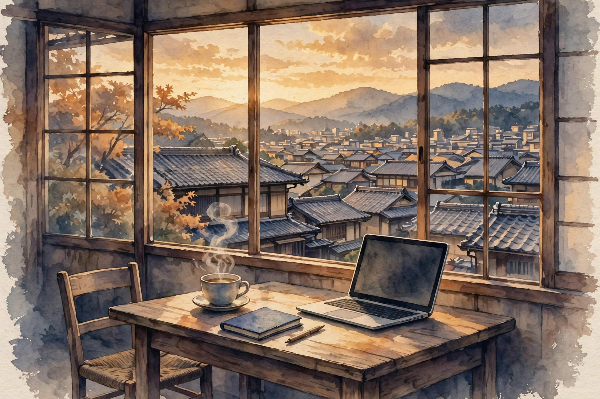

京都でデスクワーク後に気になる腰の重さ｜座り方の見直しとセルフケア、受診の目安

夕方、パソコンを閉じて立ち上がったときに、腰まわりが重く感じる。午前中は気にならなかったのに、会議や資料づくりが続いた日の終わりには、腰が伸びにくく、お尻から腰にかけて張る感じがする——。 この記事では、デスクワークの後に感じる腰の重さについて、一般的な解説と、椅子やモニターの高さなど作業環境を含めた考えられる要因の整理、無理のないセルフケア、受診の目安をまとめました。 なお、座る場面全般を取り上げた座りっぱなしの後の腰の重さの記事、同じデスクワークでも首まわりを取り上げたデスクワーク後の首こりの記事とは場面を分け、ここでは「PC作業が続いた一日の終わりに感じる腰の重さ」に焦点を当ててご紹介します。
デスクワーク後の腰の「重さ」とは
「腰の重さ」は、腰が重い・だるい・張ったように感じる、といった感覚を表す一般的な言い方で、それ自体が一つの病名というわけではありません。 感じ方もさまざまで、立ち上がったときに腰が伸びにくい方もいれば、夕方になるにつれて腰まわりがこわばる方、椅子から立ち上がる一瞬に重さを意識する方もいます。
腰は、座っているときも上半身の重みを支え続けている部位です。デスクワークでは、画面を見ながら同じ姿勢で座り続ける時間が長くなりやすく、腰からお尻、太ももの裏にかけて、同じあたりに負担がかかった状態が続きやすいと考えられます。 そこに、座り方や体の使い方の癖、その日その日の疲れの蓄積が重なると、作業の終わりに重さとして感じやすくなるのかもしれません。 まずは「どんな作業の日に・どの場面で・休むとどう感じるか」を振り返ってみることが、無理のないケアの出発点になります。座り方や立ち方そのものについては、姿勢・猫背の記事もあわせてご覧ください。
デスクワーク後に考えられる要因
デスクワークの後に腰が気になるとき、その背景には一つの原因ではなく、作業環境と過ごし方が重なっていることがあります。一般に、要因として次のようなものが挙げられます。いずれも断定ではなく、ご自身の作業環境と日常を振り返るための整理としてご覧ください。
- 椅子の高さと座る位置：椅子が高すぎたり低すぎたりすると、骨盤の傾きや足の置き方が崩れやすく、腰まわりへの負担のかかり方が偏ることがあるとされます。浅く腰かけて背もたれに寄りかかる座り方が続く場合も、同様に考えられます
- モニターの高さと距離：画面が低かったり遠かったりすると、頭が前に出て背中が丸まりやすく、その姿勢のまま作業が続くと、背中から腰にかけての緊張が続きやすいと考えられます。首まわりの感じ方についてはデスクワーク後の首こりの記事もあわせてご覧ください
- 足の置き方：足裏が床につかずに浮いていたり、足を組んだままだったりすると、骨盤まわりが安定しにくく、腰への負担が偏ることがあるとされます
- 休憩の取り方：集中するほど休憩が後回しになり、同じ姿勢のまま数時間が過ぎることもあります。立ち上がる機会が少ない日ほど、作業の終わりに重さを感じやすいかもしれません
- 運動不足：通勤や移動を含め、体を動かす機会が少ない日が続くと、腰まわりを支える筋肉を使う機会も減り、こわばりとして感じられることがあるとされます
- 睡眠やストレスとの関係：眠りが浅い日や、気持ちの張りが続く時期は、体の疲れが抜けにくく、腰の重さも目立ちやすくなることがあるといわれます
- 室内の冷え：オフィスの冷房で腰やお腹まわりが冷気にさらされる時間が長い日は、こわばりを感じやすい方もいます
東洋医学では、腰は「腎」と深く関わる場所とされ、背中や脚の裏側を巡る経絡と関係づけて考えます。 当サロンのお悩み別ガイドでも「腰痛・腰の重だるさ」として、施術でのアプローチをご紹介していますので、あわせてご覧ください。
作業中・作業後に取り入れられるセルフケア
作業の合間や一日の終わりに取り入れやすい対処をまとめました。痛みがあるときは無理をせず、痛みのない範囲で行ってください。
- 30分〜1時間に一度は立ち上がる：作業の区切りや時計を目安に、立ち上がって体を伸ばす、飲み物を取りに行くなど、座り続ける時間に区切りをつくってみてください
- 椅子に深く座り、足裏を床につける：座り直すときは椅子に深く腰かけて、両足の裏を床につけ、骨盤を立てるように意識してみてください。足が届きにくい場合は、足台を使う方法もあります
- 軽いストレッチをはさむ：立った状態で腰をゆっくり反らしたり、体を左右にゆっくりひねったり、肩まわりを大きく回したりする小さな動きをはさんでみてください。鋭い痛みが出るときは中止してください
- 腰まわりを温める：帰宅後に温めたタオルを腰に当てる、湯船にゆっくりつかるなど、こわばりを感じやすい腰まわりを温める時間をとってみてください
- 作業環境を見直す：椅子と机の高さ、モニターの高さや距離、キーボードの位置など、毎日の作業環境を一度見直してみることも、負担を重ねないための工夫になります
- 横になって休む時間と睡眠をとる：長く座った日は体力も使っています。夜に予定を詰め込まず、横になって休む時間や睡眠を優先することも大切です
京都では、河原町や烏丸周辺のオフィスで働く方も多く、仕事帰りに少し歩く距離が加わる日もあります。 座る時間と歩く時間のバランスをあらかじめ見直しておくことも、負担を重ねないための工夫になります。
こんなときは医療機関へ
腰の重さの多くは日常の負担と関係しますが、中には医療機関での確認が必要な場合もあります。次のような場合は、整形外科や内科など医療機関への受診をご検討ください。
- 脚や足のしびれがある、脚に力が入りにくい感じをともなう
- 排尿や排便のしにくさをともなう
- 痛みが強い、日に日に強くなる
- 発熱や、はっきりした理由のない体重の変化をともなう
- 夜間に痛みで目が覚める、安静にしていても痛みが続く
- 数週間たっても続く、繰り返す、仕事や日常生活に支障が出ている
- 転倒や打撲、事故のあとから痛みが出てきた
当サロンは医療機関ではなく、施術はリラクゼーションと美容を目的としたものです。診断や治療は行いませんので、 気になる症状がある場合はまず医療機関へご相談ください。
サロンのご案内 — ステラアルタイル（京都）
ステラアルタイルは、阪急 京都河原町駅・京阪 祇園四条駅からアクセスできる、京都市内の女性専用プライベートサロンです （詳しい住所は、ご予約が確定した方にご案内しています）。 施術は、オイルマッサージと美容整体を組み合わせた構成で、最初にカウンセリングでお体の状態やお悩みをうかがいながら進めます。 夕方17時からの営業のため、お仕事帰りの時間にもご利用いただけます。
基本コースは90分・10,000円（税込）です。営業時間は月曜〜土曜の17:00〜22:00（日曜休み）、完全予約制で営業しています。 なお、現在は近日開院予定のため、ご予約の受付はまだ開始していません。受付開始はサイトでご案内します。